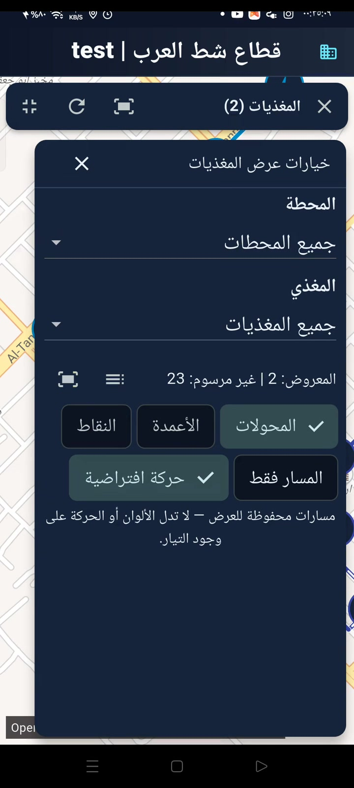
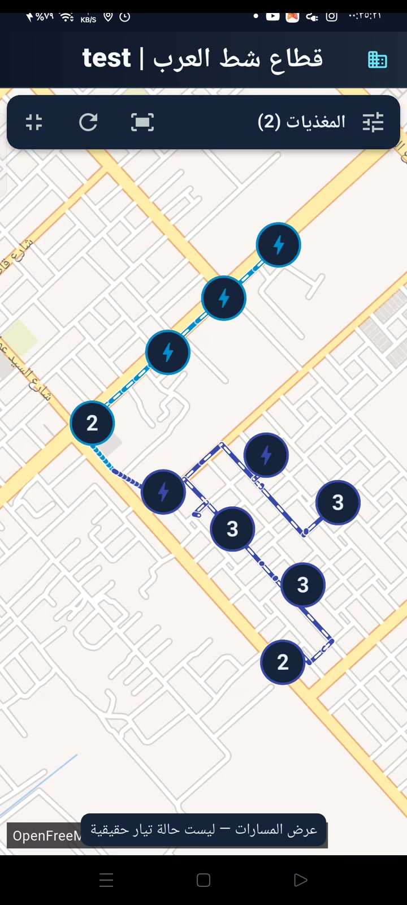

17 / 20
عرض شبكة المغذيات والطبقات
عرض الجميع أو محطة أو مغذٍ، وإظهار معلومات الأصول.
تدريب عملي · محاكاة مستقلة
ابدأ التمرين ←طبّق هذا الدرس بنفسك
واجهة تدريبية ببيانات افتراضية، لا تغيّر النظام أو بيانات المركز.
تسجيلات شاشة أصلية · 28/11/2026
الشرح بالفيديو
● تسجيل فعلي · Android · 00:49
عرض مسارات المغذيات وطبقاتها على الهاتف
↓ تنزيل التسجيلالتوضيح العربي متاح من زر CC داخل المشغّل.
خطوات الشرح المصاحبة للتسجيل
- 00:00 — افتح قسم المغذيات؛ تظهر المسارات المحفوظة على الخريطة.
- 00:14 — يمكن تبديل عرض الشاشة واستخدام أزرار التحكم العلوية.
- 00:28 — افتح خيارات عرض المغذيات واختر المحطة والمغذي والطبقات.
- 00:41 — تظهر نتيجة تغيير العرض على الخريطة. لا يمثل هذا إثباتاً لحالة الجهد.
التسجيل من النظام الفعلي المرسل من صاحب المشروع. الصوت محذوف؛ قد يختلف ترتيب الأزرار في الإصدارات الأحدث. الشرح المكتوب أدناه قد يشمل وظائف غير مصورة.
في هذا الفصل
01 / الشرح التفصيلي
تحديد النطاق
في Windows افتح عرض المغذيات المحفوظة، وفي Android افتح قسم المغذيات. اختر جميع المحطات أو محطة محددة ثم المغذي.
02 / الشرح التفصيلي
طبقات الخريطة
بدّل المحولات والأعمدة والنقاط أو اختر المسار فقط. استخدم ملاءمة المسارات لتكبير العرض على العناصر المحددة.
03 / الشرح التفصيلي
تفاصيل الأصول
في Windows قف بالمؤشر فوق الرمز، وفي الهاتف المس المحولة لعرض الرقم والمحطة والمغذي. إذا تجمعت محولات متقاربة افتح المجموعة لاختيار المحولة.
لقطات أصلية
صور من داخل النظام والتطبيق
مستخرجة مباشرة من التسجيلات المرسلة وليست واجهات مرسومة.


